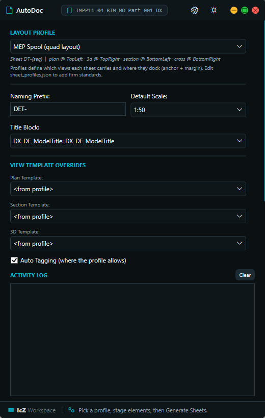

A custom Revit automation
suite, built tool by tool
The IcZ SuiteTools turn slow, error-prone MEP coordination work into one-click operations — de-duplicating geometry, writing standardized parameters, generating Bills of Quantities, auto-producing drawings, and batch-issuing deliverables. Every tool is a modeless WPF app sharing one themeable shell and one dependency-free core library.

images/suite.png
Suite Architecture hybrid core
icz library of 32 modules. Hover a tool to trace the modules it consumes.revit_compatHover any tool to light up its dependencies · hover a module to see which tools rely on it.
IcZ QAQC Suite AA IcZ.panel

images/aa.png
- Six Governed Stages: Cleanup, CMMN, SPEC, Flags, Classification and Worksets run in sequence — sealing connectors, removing duplicate runs, writing standard parameters, classifying for IFC export, and routing worksets. Collapses a full day of manual coordination into one governed pass.
- Geometry-Driven Parameters: Populates project custom parameters straight from model geometry and editable mapping tables (
spec_mappings.json), edited in-window on the Settings page — no raw JSON. No typing, no transcription errors. - Scan → Apply, One Resolver: Each stage previews as a click-to-isolate grid before it writes; preview and run share one function so they can never disagree, and a live Model Health score summarizes the result. Nothing touches the model until you approve it.
# Scan and Apply share one resolver — preview can never disagree with the run.
for stage in stages: # Cleanup · CMMN · SPEC · Flags · Classification · Worksets
with revit.Transaction(stage.name, doc): # each stage, one guarded tx
stage.apply(doc, approved_elements) # only what the review grid approved
health.score(results) # live Model Health — no TaskDialogIllustrative — the workflow shape, not the internal phase logic.
From script to suite AA began as a single ~2,600-line RevitPythonShell macro.
The original macro ("BOM SPEC Extended Parameters Update") did the whole job, but as one monolith driven by a chain of blocking dialogs. Rebuilding it as a modeless tool kept the logic and made it safe, reviewable and reusable across projects.
- One ~2,600-line file, run from RevitPythonShell
- Each phase gated by a blocking TaskDialog prompt
- Classification & workset routing hardcoded inline
- Console prints for feedback; single Revit version
- Modeless WPF with a pre-scan review grid (isolate/zoom)
- Six stages (Scan→Apply) commit only what you approve; live Model Health score
- Mappings externalized to
spec_mappings.json - Logic factored into
iczmodules; Revit 2023–26 safe
MEP Workbench FIT IcZ.panel

images/fit.png
Fittings & Accessories
Scans pipe/duct fittings and accessories against editable rules, flagging routing-preference, pairing and system breaks — each with isolate + zoom on click. Whitelists come from fitting_config.json.
Write X / Y Coordinates
Writes world X/Y of each element into text parameters after an editable global offset, with an overwrite guard so existing values stay put. Defaults live in coords_config.json.
Pipe / Duct → Flex
Rebuilds rigid runs as flex — Replace (swap with reconnect) or Containment (lay alongside) with three containment sub-modes. Rank, snap, smoothing and branch count are tunable in flex_config.json.
Copy Params Between Systems
Copies IFLS / AKS / Prozessmedium from linked source fittings onto host targets, matched by MEP system type and gated by a proximity tolerance. Keyword and triple-map config in paramsync_config.json.
cfg = load_json("coords_config.json") # offset + param names are DATA
x, y = world_xy(elem, cfg["offset_mm"]) # editable per project, not baked in
if is_empty(elem, cfg["param_x"]): # overwrite guard: keep existing values
write(elem, cfg["param_x"], meters(x))Illustrative — every FIT page reads its defaults from JSON like this.
From two standalone scripts FIT unifies a WinForms flex converter and a coordinate-filler macro.
Two separate one-off scripts became two pages of one navigated workbench — sharing its shell, theme, MEP engine and JSON config instead of each carrying its own copy.
- A WinForms "Pipe → Flex" picker (type / diameter / workset)
- A separate selection-only X/Y writer with hardcoded offsets & param names
- Console logging; no overwrite guard
- One navigated WPF window, four pages, shared chrome
- Flex adds Replace / Containment modes with tunables (
flex_config.json) - Coordinates: editable offset/params + overwrite guard, scoped run
- Reconnection consolidated into the shared
icz.mepengine
Project Setup Utility PSU IcZ.panel

images/psu.png
- Batch Link Worksets: Sorts Revit / CAD / NWD link instances into the right worksets by filename pattern in one Transaction. A workset chore that used to be done by hand, automated.
- Guarded Project Info: Reads/writes only standard built-in ProjectInfo fields with an IFD requirement reminder. Protects document health while you edit.
- Elevation-Safe Level Swap: Re-hosts elements to a new reference level while computing a delta offset so nothing physically moves. Re-level a model without breaking geometry.
Model Cleanup CD Tools.panel

images/cd.png
Ghost Purge
Detects overlapping duplicate elements (MEP + structural), keeps the connected copy and deletes the floating ghost — grouping by category/type first so it stays O(n) per group, not O(n²). Cleans massive models in seconds.
Connection Fix
Seals open MEP connector pairs within a 20 mm tolerance via spatial-grid bucketing, isolating each attempt in its own SubTransaction. Runs after Ghost Purge, on the already-reduced model.
Nested Fix new
Finds hosts with intersecting same-type nested sub-components — a hidden duplicate Ghost Purge can't see because it lives inside one host. Where a per-family rule applies it clears the redundant one's visibility; with no rule it reports only, and any repair that doesn't clear the clash is rolled back.
DocumentChanged event — reopening prompts a fresh rescan instead of trusting old rows. A Dashboard, a JSON config page, dry-run, CSV export and one-click Undo round out the workflow.# Each repair is isolated; a rule that doesn't clear the clash is undone.
with SubTransaction(doc) as st:
st.Start()
apply_fix(candidate)
doc.Regenerate()
st.Commit() if clash_cleared(candidate) else st.RollBack()Illustrative — the guard pattern shared across all three engines.
IcZ Transmit EXP Tools.panel

images/export.png
- Six Formats, One Run: DWG, PDF, NWC, IFC, images and Excel from a single dark-theme shell with an in-window results log and a performance summary at the end. No more juggling separate export dialogs.
- Excel Without Excel new: Schedules write to formatted
.xlsxthrough a pure-Python OOXML writer — no COM, no install — with a live Excel-embed path available as an opt-in. Runs on any machine and protects values like Ø, 100×200 and DN. - Clean CAD Deliverables new: Embeds crisp logos and lays out schedule tables as EMF OLE frames in the exported CAD files, so titleblock artwork survives the DWG round-trip intact. CAD issues look like the Revit sheets.
- Profiles, Naming & Guards: Reusable export profiles, a token-based filename builder, split output folders, and mid-batch Revit warning suppression so a run never stalls on a popup. The fiddly parts of batch export, solved once.
exportcfg, xlsxlite, perftracker, failures and lastused modules.IcZ AutoDoc DOC Tools.panel new
icz.doclayout). Stage any number of elements — current selection or multi-pick — and generate one detail sheet per element: plan, longitudinal + cross sections, a 3D isometric with section box, auto tags and an optional BOQ schedule, all docked to anchor points defined in sheet_profiles.json so BIM standards live in a profile, not in code. One Transaction per element: a bad element rolls back alone, the batch continues.
images/mepauto.png
Auto Views
Generates plans, sections, elevations and an isometric 3D per element, with the view range solved on a strict top ≥ cut ≥ bottom hierarchy so nothing gets clipped by a fixed height.
Dimensions & Tags
Places dimensions and element tags automatically on the generated views, with None-guards so a missing family or level never aborts the batch.
Sheet Placement
Drops the finished views onto sheets as viewports, guarding against models with no generic level or no titleblock so it degrades gracefully.
Naming Conventions
Applies a consistent naming scheme across every view and sheet it creates, so the output set is coordinated and predictable without manual renaming.
icz.doclayout engine and runs on the shared master theme (icz.theme via ShellWindow) with version-safe element Ids (icz.revit_compat), so it looks and behaves like the rest of the suite across Revit 2023–2026. Group mode (scale-tiling, own 3D sheet, isolation) and a full Settings/profile CRUD page ship in v9.BOQ Lookup RO1 Parameter.panel

images/ro1.png
- Automated BOQ Engine: Cross-references element parameters against a master lookup index to populate
SPEC_DESIGNATION(Order ID) andSPEC_DESCRIPTION. Eliminates hours of manual referencing and instantly produces accurate Bills of Quantities. - Smart Size Parsing: Reads messy inch strings and fractions (e.g.
1 1/2") and resolves them to metric Nominal Widths, with a fallback to Revit's native calculated size. Handles the real-world mess in supplier data. - Scales With The Catalog: A formatted data table drives the lookup, designed to migrate to SQL once the catalog grows past a few thousand rows. Starts simple, grows without a rewrite.
IcZ Guideline GUIDE QualityCheck.panel new
- Standards At Your Fingertips: One governed library folder plus pinned files, in a resizable list with live search — every reference document one click from the ribbon. Superseded local copies stop circulating.
- Native PDF Viewer/Editor: PDFs open in the suite's own
IcZ.PdfView(PDFium rendering, zero external dependencies): continuous scroll, full-document search, text selection, highlight / text-box / freehand markup, page rotate-reorder-insert-delete-extract-merge, print, and save with annotations burned in. No Acrobat, no locked-down-machine failures. - Preview & Edit In Place: Inline preview for Excel, Word (extracted text), Markdown, code/text and images; Markdown and text files edit in place with crash-safe writes, and every file carries a plain-text Notes sidecar for redlines that never touches the original. Annotate the standard without altering it.
MEP Opening Tool WOT Report.Panel

images/wot.png
- Cross-Link Clash Detection: Detects pipe/duct/conduit/tray crossings through basic, stacked and curtain walls, including walls in linked files. Catches openings the host model alone would miss.
- Review Grid + Filters: Results land in a review grid with isolate/zoom and filters for wall type, workset, phase and scope (model / view / selection), exportable to XLS. Triage every crossing before you act.
- Auto-Placed Markers: Drops opening family instances at each crossing so openings can be coordinated and scheduled. A complete, schedulable opening set in one run.
Shared Library icz/
Every pyRevit tool in the suite once re-solved the same problems: the Revit 2024 ElementId breaking change, modeless-window threading, theme duplication, worksharing guards, MEP connector hashing, and batch-export plumbing. The icz package pulls all of it into one dependency-free library, so each tool imports instead of reimplementing.
revit_compat
The ElementId 32-bit ⇄ 64-bit shim for Revit 2024+. The one change every other module is built to survive.
units
Feet ⇄ millimetre conversion factor and the shared MEP tolerance constant — the bare essentials, deliberately kept small.
pycompat
The IronPython 2.7 ⇄ 3 seam — import to_text, text_type, iteritems and friends here instead of touching removed builtins (unicode, xrange, basestring). The prerequisite that unblocked the ipy3 flip.
apiclient
IronPython client for the protected-logic API — .NET networking (System.Net, forced TLS 1.2) so crown-jewel algorithms can run server-side and the pyRevit tools still reach them.
theme
A single Light/Dark palette pushed into WPF {DynamicResource} keys — one source of truth for every tool's colors.
shell
The ShellWindow base: traffic-light dots, collapsible nav-rail, title-bar drag and a deferred theme apply that dodges a WindowChrome re-entrancy crash.
modeless
Wraps IExternalEventHandler into a reusable ExternalCall so WPF clicks mutate the model inside a valid API context — never off-thread.
pdfview
Shared loader for IcZ.PdfView.dll — the suite's native WPF PDF viewer/editor (PDFium render, PdfSharpCore edit): scroll, search, ink/text/highlight markup, page rotate-reorder-insert-delete-extract-merge, and annotation burn-in.
dialogs
One hybrid-safe file/folder picker wrapping the .NET dialogs directly, so pickers work under IronPython 2.7 / 3 and CPython-in-Revit with no pyRevit forms dependency.
review_grid
Builds the shared review rows (check · ID · Family & Type · badge) with click-to-isolate hooks, so every pre-scan review looks and behaves the same.
validation
Reusable WPF ValidationRule subclasses for settings pages — inline red-outline feedback on empty or non-numeric input, wired straight from XAML.
mep
The suite's MEP connector engine: unused-connector detection, string-domain matching, an O(n) spatial-grid pair finder, and safe auto-connecting.
geom
True-geometry (solid-level) intersection primitives — catches the cases axis-aligned bbox tests miss: rotated elbows, L-shaped fittings and insulation shells whose boxes overlap while the solids never touch.
route
Generative A* routing behind one call — IcZ.Core.dll's fast voxel pathfinder when the binary is present, an identical-semantics pure-IronPython fallback (lower node cap) when it isn't. One netstandard2.0 binary serves Revit 2023–2026.
tags
Generic tag-audit engine — one pass parameterized by (element category, tag category) finds untagged (missing) and over-tagged (duplicate) elements per view, replacing seven single-purpose buttons.
naming
Safe family / type name resolution — the first non-empty type label across a list, handling the FamilyInstance ambiguities that trip up naïve lookups.
params
Parameter read/write primitives with one shared fill-empty / overwrite policy and one instance-then-type lookup chain across the whole suite.
configstore
One hardened JSON config store the whole suite delegates to — load, deep-merge and atomic write behind export profiles, guideline folders, AA mapping tables and the param registry. No more per-tool copies of the same dance.
paramreg
Managed-parameter registry — reads param_registry.json so AA's SPEC/CMMN handling comes off hardcoded name literals; retarget a firm by swapping the JSON, no code change.
scorecard
A generic scored test-table framework — named tests each returning a 0..1 score + comment, aggregated per group and overall with score→label banding. Scores anything, not just families.
mcheck
Turns the firm's Autodesk Model Checker ruleset (the ~709-rule LOI parameters check) into a report-only score AA runs against the open model — no external Model Checker install, no separate run.
famqa
Profile-driven family health-check engine — a firm-agnostic test/scoring core reading famqa_profiles, generalized from a single-vendor content standard into a reusable QA pass.
serdes
JSON-safe deep-clone and serialisation helpers — the landing target for a future config rewire, kept deliberately un-adopted until a per-tool diff proves it.
worksets
Read an element's workset, test whether its partition is writable, move it to a target, and find-or-create a workset by name — the pieces AA Phase 8 and PSU both need.
ownership
Worksharing checkout / editability guards, so every write tool skips elements owned by other users and reports the owner identically.
exportcfg
The shared profiles.json handler (schema v2) for the export tools — reusable export profiles read and written through one contract.
doclayout
The AutoDoc Universal Layout Engine — a JSON profile says which views a sheet carries and where they dock (anchor + margin); this does the matrix math, view creation, place-and-shift viewport docking, schedule placement and tagging. Transaction-free.
xlsxlite
A minimal pure-Python .xlsx writer — real OOXML (zip + XML), no COM and no third-party packages — the Excel-free fallback for schedule and register exports.
perftracker
A lightweight per-format performance tracker that gives users an actionable count / elapsed / warn / error summary at the end of a batch run.
failures
Shared warning/failure suppression via IFailuresPreprocessor, so batch operations dismiss Revit's mid-run popups instead of stalling on them.
lastused
Persistent per-purpose folder/file memory with slots (profile, template, output…), so each picker seeds from the right place instead of the last path used anywhere.
revit_utils
Selection / isolation UI helpers and dynamic shared-parameter binding routines — the small conveniences several tools reach for.
from icz import theme
from icz.shell import ShellWindow # shared window chrome
from icz.modeless import ExternalCall # ExternalEvent-safe model writes
from icz.revit_compat import eid # Revit 2024+ ElementId shim
class ToolWindow(ShellWindow): # inherit dots, nav-rail, theme
...
commit = ExternalCall(handler) # call .raise_with(fn) from any click
key = eid(element.Id) # int, on any Revit versionOnly the public call surface is shown here — internal logic stays in the private repository.